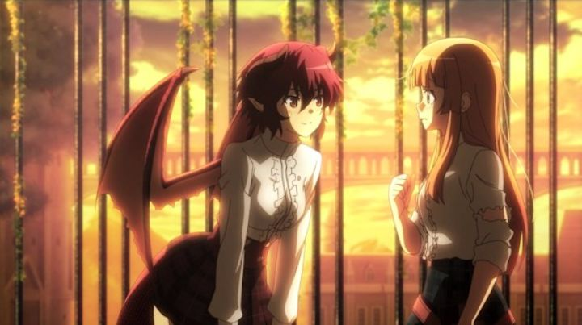

Disclaimer: This review covers the anime spin-off "Mysteria Friends," also known as "Manaria Friends" or "Rage of Bahamut: Manaria Friends."I've never tried the mobile game "Rage of Bahamut," but I rather enjoyed the 2014 anime adaption "Rage of Bahamut - Genesis," even though it's story in relation to the games is loose at best. Showing off the diverse potential of the franchise, there would be further anime adaptations, including a spin-off with unrelated characters, simply called "Mysteria Friends." While keeping the same fantasy setting, it doesn't have action or any story with urgency: it's a soft romance between two girls at a magic school called Mysteria Academy. That's fine in itself, but existing fans of the previous series might be put off.A shorter series (10 episodes, each about 14 minutes long, or half the length of a regular TV episode), it follows the daily lives of Anne, a human princess gifted in magic, and Grea, a half-dragon princess. Anne's the popular one that gets everyone's attention (recognized as "the" princess), and can be a little clumsy and too quick at times, despite excelling at her studies. Grea is comparitively shy and quiet, her wings and tail poking out of her school uniform. The two are the best of friends. They spend time together after class, eating lunch together, going shopping, and blushing whenever the other says something nice to them. And... that's basically the story. For the most part, there's nothing explicit to say that the two are anything more than just best friends. But if you want to look at it in a certain way, there's also plenty of subtext to suggest a lesbian romance between them. It's sweet and cute and fun, even if it doesn't go anywhere, not even a confession at the end. The show also kind of throws the viewer in the deep end, without explaining this magical world, or why monsters sometimes show up in parts of the school. The setting is an interesting one, and the viewer gets a glimpse of it with the organic world-building, but more would have been appreciated. Of course, there is no overarching story or villain to keep things exciting either: this just isn't that type of show (whatever action that is present, is usually of low stakes).  With only 14 minutes per episode, and the stories each being standalone, I quickly compared the episodes to one-shot pilot manga chapters. Perhaps 20 pages long each, with little explanation of the cool drawings, instead focusing on the slice of the characters' experience. There's something I like about that... maybe the shorter runtime has something to it. Or maybe I just preferred if "Mysteria Friends" was a comic anthology / art-book instead, focusing on better art with these stories. The anime is produced well enough. Animation meets standard expectations, and visual shots are average for most of the scenes. When the opportunity arises, the show likes to use warm orange lighting, close-ups on the girls' eyes, and so on. There are also a few scenes of suggestive imagery, whether its of the girls slowly dressing or undressing, or writhing in bed with a fever. The fanservice doesn't go too far, setting the mood of romance rather than to excite teenage boys. As an unrelated aside, "Mysteria Friends" was meant to air years earlier by Studio Hibari, but the studio changed to CygamesPictures at some point for unspecified reasons. I liked the soft musical score (would fit nicely on a Sunday afternoon while drinking tea and snuggling with a pet cat), and the English dub is plenty fine, with some smart choices in the translation.There's certainly an audience for "boys-love" and "girls-love" anime and manga, and this is effectively one of those. I would have preferred a little more committment in "Mysteria Friends" to confirm the girls' relationship, and would have liked a little more world-building to take advatange of the depth of the setting (and perhaps without some of the obvious anime trappings, like a beach-episode with the girls in modern-day bikinis). But it's hard to be too serious or offended with the show either. It is fun and soothing for what it is.
- "Ani" More reviews can be found at : https://2danicritic.github.io/ Previous review: review_Myriad_Colors_Phantom_World Next review: review_Nadia_-_The_Secret_of_Blue_Water